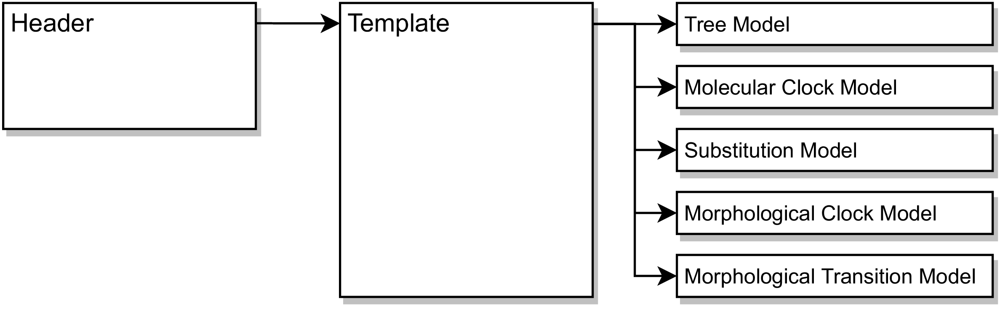
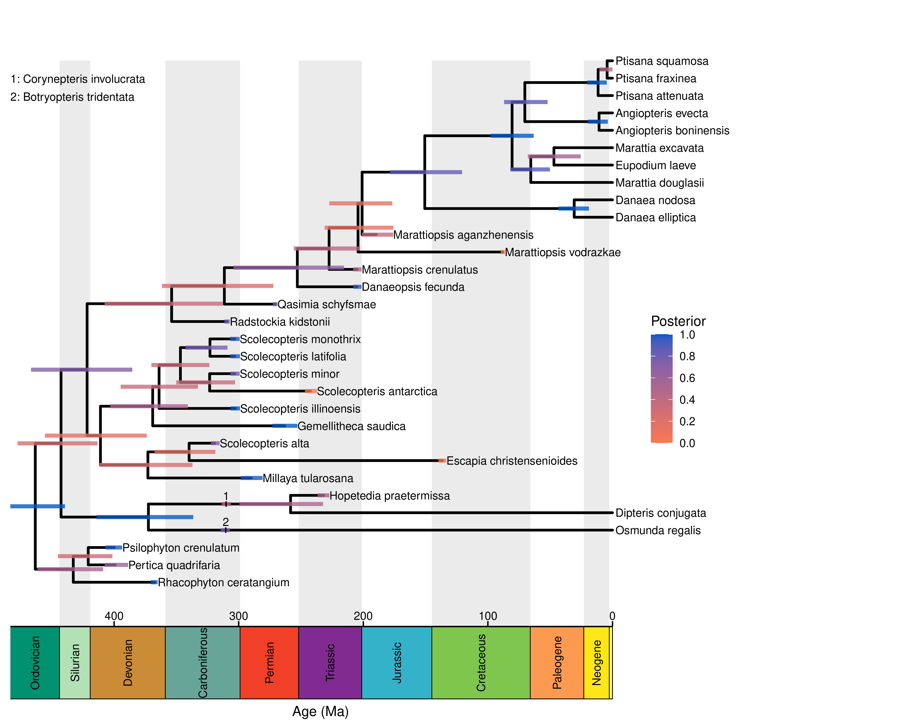
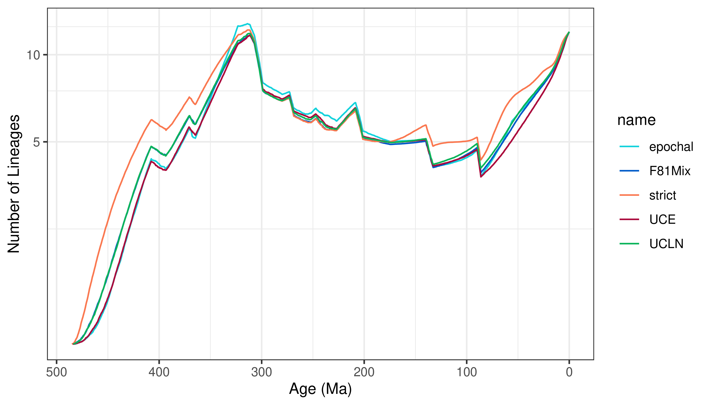
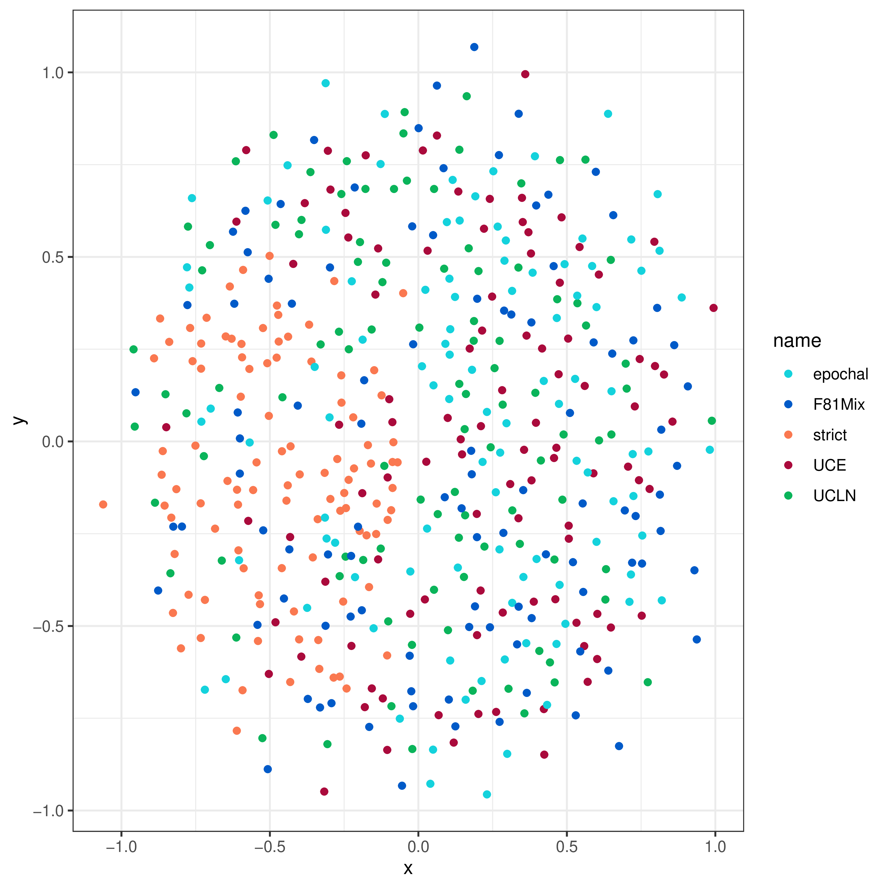
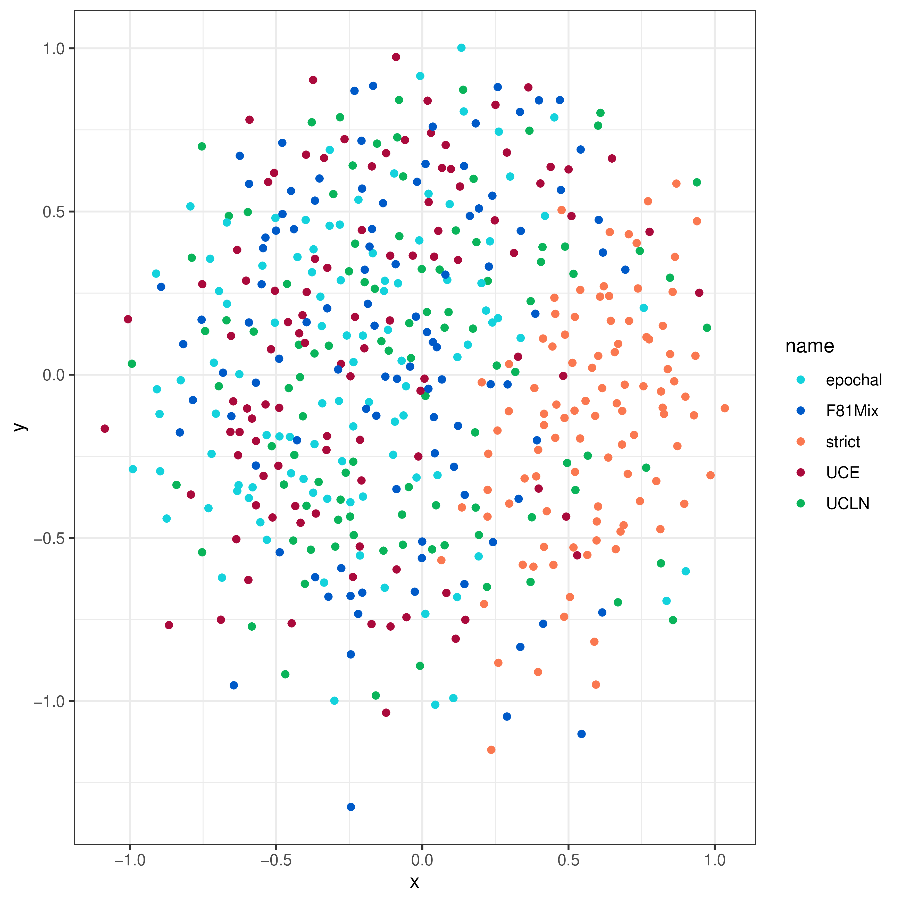
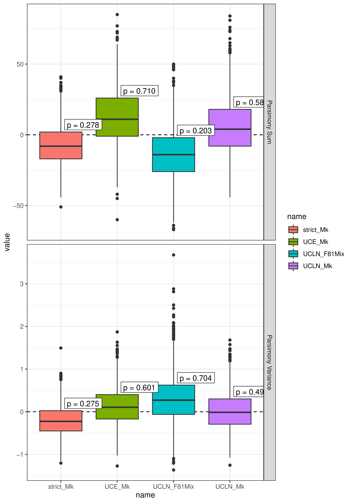

Total-evidence (or combined-evidence) dating allows us to estimate time-calibrated phylogenies for extinct and extant species in one coherent statistical framework. In this framework, fossils are treated as tips in the phylogeny, and their phylogenetic position and branch lengths are inferred directly from morphological data rather than specified a priori. While this relieves us from the difficult (sometimes impossible) task of deriving reliable fossil-calibration densities for use in node-dating, it requires us to specify a model that (in addition to the standard components of a phylogenetic model) describes how morphological characters evolve, and how lineages diversify and produce fossils over time.
As with all phylogenetic analyses (and divergence-time estimation in particular), inferences using total-evidence dating may be sensitive to the models we use. Therefore, when applying total-evidence dating, it’s a good idea to use different models to assess whether they affect your inferences, and if they do, to assess the relative and absolute performance of the different models. The purpose of this tutorial is to help you manage the task of using a potentially large number of total-evidence dating models and assessing their performance, similar to the workflow we use for our own work (May et al. 2021). It is intended to be adapted to new datasets, and to allow you to add or modify models as appropriate for your own analyses.
This tutorial is structured as follows. In the first section (), we discuss the general structure of the total-evidence-dating model, and the organizational scheme of the analysis scripts we provide. In the second section (), we show how to estimate the posterior distribution under a given model using Markov-chain Monte Carlo. In the third section (), we present some tools for assessing how much different modeling assumptions affect tree topologies and divergence-time estimates. In the fourth section (), we show how to compare the relative fit of competing models using Bayes factors, which can be useful if posterior estimates are sensitive to different models. In the final section (), we show how to use posterior-predictive simulation to assess whether our models provide a good absolute (rather than relative) description of morphological evolution.
⚠ This tutorial involves running many analyses and comparing many models. Be aware that it can take several hours to complete! We will also presume some familiarity with many aspects of phylogenetic modeling; be sure to refer to the prerequisites if you are not already familiar with the models we are using.
R dependenciesMany of the post-processing steps in this tutorial require you to use R, especially the package RevGadgets.
Before you begin, you should make sure you have the following R package dependencies installed:
RevGadgetsggplot2apephytoolsphangornsmacofgtoolsgridExtraYou can install these packages in R using install.packages(library name).
Consider doing the RevGadgets tutorial if you’re not comfortable working in R.
The total-evidence dating analysis has five model components:
For any one of these model components, we must choose one of several possible models. For example, we may choose to use a uniform tree distribution or a fossilized birth-death process for the tree model. If we choose to use a fossilized birth-death process, we have to decide whether rates of diversification and/or fossilization vary over time (or even among clades). Because these assumptions can have strong effects on our ultimate inferences, we may wish to perform analyses under various different models and compare the relative and absolute fit of these models to our data. To learn more about these different model components, see the CTMC, molecular dating, FBD, and morphological phylogenetics tutorials.
The data and scripts for this tutorial have a special structure.
To download all the files in the appropriate structure, click HERE, and then unpack the archive.
You will want to run all of the scripts from this tutorial in the top-level directory of TED_workflow.
The example dataset is a pruned down version of the marattialean fern dataset analyzed in May et al. (2021).
We also provide scripts for most of the models we used for that study.
However, the workflow is intended to be adapted to other datasets, and you can even add new models or variants of the existing models for your own studies.
The archive also includes a headers directory, a modules directory, and a posterior_summary directory, all of which we explain below.
When we run a single analysis, it is often most convenient to write a single script that specifies every part of our model. However, when we run a potentially large number of analyses under different models, it can be helpful to adopt a different approach. While there are many conceivable approaches, one that we find useful is to create headers, which define the models to be used for a particular analysis, a template, which stitches together the models provided by the header file, and module files which implement the individual models ().

This tutorial focuses on the structure of a total-evidence dating analysis, and on assessing different models, rather than on the specific details of any one model. One thing to keep in mind is that it’s critical that different modules for a given model component define a common set of variables, so that we can swap different modules in without having to change other parts of the code. For example, all diversification models will have to define parameters $\lambda$ and $\mu$, to be used by the fossilized birth-death process. The details of how the different diversification models fill in $\lambda$ and $\mu$ will, of course, depend on the model. We’ll hide details of particular models in folds, like so (in case you want to dig in):
Module: An example model module
Here’s a Jukes-Cantor model of sequence evolution, partitioned by alignment:
# the partitioned JC substitution model # REQUIRED: mole_Q (one per partition), mole_site_rates (one per partition), and mole_relative_rates (one per partition) # define the Q matrix and site rates per partition for(i in 1:naln) { # the Q matrices mole_Q[i] <- fnJC(4) # the site rates # NOTE: this model doesn't have ASRV, but we have to define it anyway mole_site_rates[i] <- [1.0] } # relative-rate multipliers among partitions mole_proportional_rates ~ dnDirichlet(rep(1, naln)) moves.append( mvBetaSimplex(mole_proportional_rates, weight = naln) ) # rescale the rates so the mean is 1 mole_relative_rates := abs(mole_proportional_rates * naln)Note that the comments at the top of the module file list what variables have to be defined in this module. These are variables that will ultimately be used by other parts of the model, so all modules for a given model component must define those variables. For example, all substitution models must define one $Q$ matrix per data partition, a set of site rates to accommodate site-rate variation within partitions, and a set of relative rates among partitions.
We’ll see how this works by starting with the header file for an MCMC analysis under a simple total-evidence model (located in headers/MCMC/strict_Mk.Rev).
The first thing we’re going to do is specify which tree model to use.
In this tutorial, we’ll assume we’re always using a variant of the fossilized birth-death process as our tree model.
However, there are variants of the fossilized birth-death process that assume that rates are constant over time, or that they vary over time.
We create a variable, diversification_model, whose value is a string that refers to a specific diversification model (which defines speciation and extinction rates).
We create an analogous variable that defines which fossilization model to use, fossilization_model.
In this case, we’ll assume that both all of the parameters are constant over time.
# tree model
diversification_model = "constant"
fossilization_model = "constant"
Next, we say which molecular model we want to use. In this case, we are using a strict molecular clock model and an HKY substitition model.
# molecular model
mole_clock_model = "strict"
substn_model = "HKY"
Likewise, we’ll use a strict morphological clock model, and a simple model of morphological evolution, the Mk model.
# morphological model
morph_clock_model = "linked"
morph_model = "Mk"
Next, we’ll specify what type of analysis we want to do. In this example, we’re going to start with a standard MCMC analysis; later, we’ll also do “power posterior” and “posterior-predictive simulation” analyses.
# the type of analysis
analysis = "MCMC"
There’s nothing more frustrating than running two (or more) analyses but forgetting to change the output files, so all your outputs get overwritten! To prevent this from happening, we’ll create some variable in the header file that define where the output should be stored, and also build the name of the output directory based on the variables defined above (so that different analyses will end up with different output filenames). To achieve this, we start by defining the overall output directory:
# the output directory
output_dir = "output_MCMC"
We then create another variable, output_extra that you can use to append any additional information to the output file name.
output_extra = "_run_01"
(We’re using output_extra to specify a given run of the same analyses.
This lets us quickly do multiple runs by duplicating the header and changing the run number.
However, in principle, you could use this variable to keep track of any additional information you want.)
Next, we use string concatenation (+) to programmatically create the output filename based on the output_dir and the analysis-specific variables.
output_filename = output_dir + "/div_" + diversification_model + "_foss_" + fossilization_model + "_moleclock_" + mole_clock_model + "_moleQ_" + substn_model + "_morphclock_" + morph_clock_model + "_morphQ_" + morph_model + "_" + analysis + output_extra + "/"
Finally, the header file sources the template.Rev file.
You can think of this as the header file handing all of the relevant information we’ve just defined to the template file, which then puts together all the corresponding models into one analysis.
# source the template file
source("modules/template.Rev")
The job of the template file is to take the values specified in the header to put together an analysis.
The template file is located in modules/template.Rev.
Let’s look at it line-by-line.
Like most Rev scripts, the first thing we’ll do in the template is create a container for moves:
# moves container
moves = VectorMoves()
as well as some useful constants (in this case, H is the standard deviation for a lognormal distribution that spans one order of magnitude, which we use for some prior distributions):
# convenient constants
H = ln(10) / (qnorm(0.975) - qnorm(0.025))
Again like a normal Rev script, we’ll load our data.
For your own datasets, you’ll want to substitute your own data files for these variables.
We’ll begin by reading in our molecular dataset:
# read the sequence data
moledata = readDiscreteCharacterData("data/rbcL.nex", alwaysReturnAsVector = TRUE)
naln = moledata.size() # the number of alignments
The argument alwaysReturnAsVector = TRUE enforces that the molecular data is always assumed to be a vector.
Whether you are reading in a nexus file with a single alignment or many alignments, the result will always be a vector of alignments.
If we read one alignment, we’d just end up with a vector of length one.
This means that moledata.size() returns the number of alignments in the vector, not the number of sites in the alignment.
(Also note that our example molecular data file contains three alignments, one per codon position.)
Next, we read our morphological data:
# read the morphological data
morphdata = readDiscreteCharacterData("data/morpho.nex")
Now, we read in the taxon data (including the ages associated with each taxon, as described here):
# read the taxon data
taxa = readTaxonData("data/taxa.tsv", delimiter=TAB)
ntax = taxa.size()
nbranch = 2 * ntax - 2
It will be handy to know the number of fossils in our dataset.
To do this, we count the number of taxa in our taxa.tsv file that aren’t sampled at time 0:
# count the number of fossils
num_fossils = 0
for(i in 1:taxa.size()) {
if (taxa[i].getMinAge() != 0) {
num_fossils = num_fossils + 1
}
}
We also need to make sure all of our character data objects have the same species in them. We add missing data to each data object for any species that aren’t sampled for that dataset.
# add missing taxa to the sequence data
for(i in 1:naln) {
x = moledata[i]
x.addMissingTaxa(taxa)
moledata[i] = x
}
# add missing taxa to the morphological data
morphdata.addMissingTaxa(taxa)
Finally, some of our fossilized birth-death models will allow diversification and/or fossilization rates to vary among geological epochs.
We’ll read in a file that encodes these epochs, epoch_timescale.csv, and define our breakpoints accordingly.
You may wish for rates to vary over ages, periods, or some other arbitrary way; this code should work for any arbitrary piecewise timescale, as long as it is formatted the same as epoch_timescale.csv.
# read in the timescale
timescale = readDataDelimitedFile("data/epoch_timescale.csv", header = true, delimiter=",")
num_bins = timescale.size()
for(i in 1:num_bins) {
breakpoints[i] <- timescale[i][2]
}
Here is where the rubber meets the road! We’ll start using the variables defined in the header file to create our model.
The first object we will create is the tree. We first need to define some dataset-specific variables, for example the number of extant taxa in the tree, and the total number of extant taxa (these values will be used to compute the sampling fraction):
#############################
# specifying the tree model #
#############################
# first we specify some dataset-specific parameters
extant_taxa = 10 # total number of extant taxa in the tree
total_taxa = 111 # total number of extant taxa in the group
We also need to specify the minimum and maximum age of the group (the age of the lineage ancestral to the root of the tree):
origin_min = 419.2 # latest origin is the beginning of the Devonian
origin_max = 485.4 # earliest origin is the beginning of the Ordovician
We assume the ancestral lineage is uniformly distributed between this minimum and maximum age. We therefore draw it from a uniform prior distribution and place MCMC proposals on it:
# draw the origin time
origin_time ~ dnUniform(origin_min, origin_max)
moves.append( mvSlide(origin_time, weight = 1.0) )
Now we create the diversification model (that defines speciation and extinction rates) using the variables defined in the header. Once again, we use string concatenation to look up the appropriate file:
# specify the diversification model
source("modules/diversification_models/" + diversification_model + ".Rev")
In this case, the above code will evaluate to source("modules/diversification_models/constant.Rev"), because we defined diversification_model = "constant" in our header file!
Module: The Constant-Rate Diversification Model
In this model, (
modules/diversification_models/constant.Rev) we assume speciation ($\lambda$) and extinction ($\mu$) rates are constant over time. We parameterize the model using the net-diversification rate ($\lambda - \mu$) and the relative extinction rate ($\mu \div \lambda$). We use an empirical prior on the diversification rate such that the prior mean diversification rate gives rise to the known number of taxa at the present (see below for details):# the constant-rate diversification model # REQUIRED: lambda, mu (both one per time interval) # empirical prior on the diversification rate diversification_prior_mean <- ln(total_taxa) / origin_time diversification_prior_sd <- H # the diversification rate diversification ~ dnLognormal( ln(diversification_prior_mean) - diversification_prior_sd * diversification_prior_sd * 0.5, diversification_prior_sd) moves.append( mvScale(diversification, weight = 1.0) )The standard deviation of this distribution is
H, which implies that the true diversification rate is within one order of magnitude of the prior mean.We draw the relative-extinction rate from a uniform prior between 0 and 1 (if the relative extinction rate was greater than one, the process almost certainly would have died before reaching the present):
# the relative extinction rate relext ~ dnUniform(0, 1) moves.append( mvSlide(relext, weight = 1.0) )Finally, we transform the net-diversification and relative-extinction rates into the speciation and extinction rates:
# transform to real parameters lambda := rep(abs(diversification / (1 - relext)), num_bins + 1) mu := abs(lambda * relext)Note that we replicate
lambdaone time per time interval (num_bins + 1). We are doing this because some diversification models will actually letlambdavary among time intervals, and other parts of the code (for example, the FBD distribution) will not know whether we are using a constant or epochal model. Replicatinglambdalets us use downstream code that will work the same for constant or epochal models. Theabs()functions just guarantee that both of these rates are positive numbers.Here’s how the empirical prior works. For simplicity, we imagine the process begins with at time 0 and diversifies forward in time, $t$, under a deterministic growth model with growth rate (diversification rate) $\lambda - mu$. The number of species at time $t$ is then:
\[\begin{equation*} N(t) = N(0) \exp^{(\lambda - \mu)t} \end{equation*}\]We can turn this into an empirical prior on the mean by plugging in the number of extant species into $N(t)$, the number of initial species (one) into $N(0)$ and solving for $\lambda - \mu$:
\[\begin{equation*} \lambda - \mu = \frac{ln[N(t)/N(0)]}{t} = \frac{ln[N(t)]}{t} \end{equation*}\]which is reflected in the prior mean code:
diversification_prior_mean <- ln(total_taxa) / origin_time
Next, we source the fossilization model:
# specify the fossilization model
source("modules/fossilization_models/" + fossilization_model + ".Rev")
Module: The Constant-Rate Fossilization Model
This model is defined in
modules/fossilization_models/constant.Rev. As with the constant-rate diversification model, this model assumes that the fossilization rate is constant over time. Here, we use an empirical prior that centers the fossilization rate such that, on average, we expect to see the number of fossils we observe in the empirical dataset (see below for details):# the constant-rate fossilization model # REQUIRED: psi (one per time interval) # empirical prior on the fossilization rate fossilization_prior_mean <- num_fossils * diversification_prior_mean / (exp(diversification_prior_mean * origin_time) - 1) fossilization_prior_sd <- 2 * HWe then draw the fossilization rate from the corresponding Lognormal prior:
# the fossilization rate psi_global ~ dnLognormal( ln(fossilization_prior_mean) - fossilization_prior_sd * fossilization_prior_sd * 0.5, fossilization_prior_sd) moves.append( mvScale(psi_global, weight = 1.0) )As with the constant diversification model, we replicate the global fossilization rate so there is one per time interval:
# define the timelines psi := rep(psi_global, num_bins + 1)Like the diversification parameter, we’ve used an empirical prior on the fossilization rate, $\psi$. If there are $N(t)$ species at time $t$, each of which leaves a fossil with rate $\psi$, then the rate at which fossils are produced by the entire population at time $t$ is $\psi \times N(t)$. Assuming deterministic population growth at rate $\lambda - \mu$, we can compute the total number of fossils produced by the population up to time $t$, $F(t)$, by integrating time up to $t$:
\[\begin{equation*} F(t) = \int_0^t \psi N(s) ds = \frac{\psi (\exp^{(\lambda - \mu)t} - 1)}{\lambda - \mu} \end{equation*}\](assuming we began with a single lineage at time $t = 0$). To derive an empirical prior mean for the fossilization rate, we plug the observed number of fossils in our dataset into $F(t)$ and solve for $\psi$, which leads to:
\[\begin{equation} \psi = \frac{F(t) (\lambda - \mu) }{ \exp^{(\lambda - \mu)t} - 1 } \end{equation}\]which is reflected in the code as:
fossilization_prior_mean <- num_fossils * diversification_prior_mean / (exp(diversification_prior_mean * origin_time) - 1)
Now that we have defined our origin_time and the diversification and fossilization models, we can draw the tree from a fossilized birth-death distribution:
# make the FBD tree
timetree ~ dnFBDP(originAge = origin_time,
lambda = lambda,
mu = mu,
psi = psi,
timeline = breakpoints,
condition = "survival",
rho = Probability(extant_taxa / total_taxa),
taxa = taxa)
where breakpoints defines where the rate parameters change, if applicable, and we condition on the process surviving (leaving at least one extant descendant).
We have to place MCMC proposals on the tree topology and branch lengths:
# MCMC proposals on the tree
moves.append( mvFNPR(timetree, weight = ntax ) )
moves.append( mvNarrow(timetree, weight = 5 * ntax ) )
moves.append( mvNodeTimeSlideBeta(timetree, weight = 5 * ntax ) )
moves.append( mvRootTimeSlideUniform(timetree, weight = ntax, origin = origin_time) )
moves.append( mvCollapseExpandFossilBranch(timetree, weight = num_fossils, origin = origin_time) )
Next, we place proposals on the fossils: whether or not they are sampled ancestors, and also on their exact age (to accommodate stratigraphic uncertainty):
# MCMC proposals on whether fossils are sampled ancestors
moves.append( mvCollapseExpandFossilBranch(timetree, weight = num_fossils, origin = origin_time) )
num_sampled_ancestors := timetree.numSampledAncestors()
# MCMC proposals on the fossil ages
fossils = timetree.getFossils()
for(i in 1:fossils.size()) {
# get the fossil age
t[i] := tmrca(timetree, clade(fossils[i]))
# specify the age contraint
a = fossils[i].getMinAge()
b = fossils[i].getMaxAge()
F[i] ~ dnUniform(t[i] - b, t[i] - a)
F[i].clamp( 0 )
# specify a proposal on the fossil age
moves.append( mvFossilTimeSlideUniform(timetree, origin_time, fossils[i], weight = 1.0) )
}
Finally, we keep track of a tree for the extant species and the tree lengths.
# keep track of the extant tree
extant_tree := fnPruneTree(timetree, fossils)
# keep track of the tree length
TL := timetree.treeLength()
TL_extant := extant_tree.treeLength()
Now we specify the molecular clock model:
########################################
# specifying the molecular clock model #
########################################
source("modules/mole_clock_models/" + mole_clock_model + ".Rev")
In this header file, we assumed a strict molecular clock.
Module: The Strict Molecular Clock
This simple model (defined in
modules/mole_clock_models/strict.Rev) assumes that the rate of evolution is the same across branches of the tree. It therefore has a single parameter, which we parameterize on the log scale:# the strict molecular clock model # REQUIRED: mole_branch_rates (either one value, or one value per branch), mole_branch_rate_mean # the strict clock model on the log scale mole_clock_rate_log ~ dnUniform(-10, 1) moves.append( mvSlide(mole_clock_rate_log) ) mole_clock_rate_log.setValue(-7)We then exponentiate to get the clock rate on the real scale:
# exponentiate mole_clock_rate := exp(mole_clock_rate_log)Our relaxed clock models will allow one rate per branch, defined by the variable
mole_branch_rates(a vector with one element per branch). To keep our code generic, we’ll make sure we definemole_branch_ratesfor the constant model, but just set it equal to the strict clock rate:# the branch-specific rates mole_branch_rates := mole_clock_rateFinally, we compute the mean rate of evolution among branches (sometimes we will use this for relaxed clock models, but in this case it is again equal to the clock rate itself).
# the mean of the branch rates mole_branch_rate_mean := mole_branch_rates
We source the molecular substitution model as so:
#####################################
# specifying the substitution model #
#####################################
source("modules/substn_models/" + substn_model + ".Rev")
In this analyses, we’re using the HYK substitution model, partitioned among alignments (which correspond to codon positions in the example rbcL dataset).
Module: The HKY Substitution Model
This model is defined in
modules/substn_models/HYK.Rev. It has a single parameter, $\kappa$, which defines the transition to transversion ratio, and a vector of stationary frequencies, $\pi$. We allow each molecular partition to have different $\kappa$ and $\pi$ parameters.# the partitioned HKY substitution model # REQUIRED: mole_Q (one per partition), mole_site_rates (one per partition), and mole_relative_rates (one per partition) # define the Q matrix and site rates per partition for(i in 1:naln) { # the transition/transversion ratio mole_kappa[i] ~ dnLognormal(ln(1) - H * H * 0.5, H) moves.append( mvScale(mole_kappa[i], weight = 1.0) ) # the stationary frequency mole_pi[i] ~ dnDirichlet(rep(1,4)) moves.append( mvBetaSimplex(mole_pi[i], weight = 1.0) ) # the Q matrices mole_Q[i] := fnHKY(mole_kappa[i], mole_pi[i]) # the site rates # NOTE: this model doesn't have ASRV mole_site_rates[i] <- [1.0] }Because this model doesn’t allow rate variation among sites within a partition, we set
mole_site_rates[i] <- [1.0].We also want each partition to have a different overall rate. We specify a proportional rate per partition from a Dirichlet distribution (which has a sum of one), then multiply by the number of partitions (so that the mean rate is 1):
# relative-rate multipliers mole_proportional_rates ~ dnDirichlet(rep(1, naln)) moves.append( mvBetaSimplex(mole_proportional_rates, weight = naln) ) # rescale the rates so the mean is 1 mole_relative_rates := abs(mole_proportional_rates * naln)(Once again,
abssimply reassures RevBayes that these rates are positive numbers.)
We then specify the phylogenetic CTMC models for each alignment, which depend on the tree, substitution model and molecular clock model:
# make the CTMC for molecular data
for(i in 1:naln) {
seq[i] ~ dnPhyloCTMC(timetree, mole_Q[i], branchRates = mole_branch_rates, siteRates = mole_site_rates[i] * mole_relative_rates[i])
seq[i].clamp( moledata[i] )
}
Our model must also specify how rates of morphological evolution vary among lineages (if at all). We specify this model by sourcing the appropriate module file:
############################################
# specifying the morphological clock model #
############################################
source("modules/morph_clock_models/" + morph_clock_model + ".Rev")
We’re using a “linked” morphological clock model, which assumes rates of morphological evolution are proportional to rates of molecular evolution (per branch). In this case, because we’re using a strict molecular clock, this implies that rates of molecular evolution also follow a strict clock (though the absolute rate will be different between molecular and morphological characters).
Module: The Linked Morphological Clock
Here, we use the linked morphological clock, specified in the
modules/morph_clock_models/linked.Revmodule file. This model has a single parameter: the absolute rate of morphological evolution, which we parameterize on the log scale and then exponentiate onto the real scale:# the linked morphological clock model # REQUIRED: morph_branch_rates (either one value, or one value per branch) # draw the log of the rate from a uniform distribution morph_clock_rate_log ~ dnUniform(-10, 1) moves.append( mvSlide(morph_clock_rate_log) ) morph_clock_rate_log.setValue(-7) # exponentiate morph_clock_rate := exp(morph_clock_rate_log)Now we compute the branch-specific rates of morphological evolution. Because we’re assuming these are proportional to the branch-specific rates of molecular evolution, we simply rescale the molecular branch rates like so:
# the branch-specific rates # in this model, these are a multiple of the molecular branch rates # so, the morphological branch rate = morphological clock rate * molecular branch rate / morphological clock rate morph_branch_rates := morph_clock_rate * mole_branch_rates / mole_branch_rate_meanBecause all molecular clock models will define a
mole_branch_rate_mean, this module will work in combination with all molecular clock models. In this example, we are effectively just rescaling the (global) molecular clock rate to get the (global) morphological clock rate.
This model component describes how morphological characters change among states. (We’ll assume for simplicity that the characters are binary. These modules would have to be modified to accommodate multistate characters. See the multistate tutorial for ideas of how to achieve this.)
We source the morphological transition model:
#################################################
# specifying the morphological transition model #
#################################################
source("modules/morph_models/" + morph_model + ".Rev")
In this analysis, we’re using an Mk model (Lewis 2001).
Module: The Mk Model
In this analysis we’re assuming that rates of transition between character states are the same, i.e., that the $Q$ matrix is symmetrical. Because the rate matrix is normalized to have an average rate of 1, this model has no free parameters:
# the Mk model of morphological evolution # REQUIRED: morph_Q (either one, or one per mixture category), morph_site_rates, site_matrices (TRUE or FALSE) # the Mk model morph_Q <- fnJC(2) # relative rates among sites morph_site_rates <- [1.0] # make sure we don't use site matrices site_matrices = FALSEThe rates of change among characters are the same, so we use
morph_site_rates <- [1.0], and the rate matrix $Q$ is the same for all characters, so we setsite_matrices = FALSE.
Just as with molecular substitution models, we hand the tree, transition model, and morphological-clock model to a phylogenetic CTMC, and clamp our observed data:
# make the CMTC for morphological data
morph ~ dnPhyloCTMC(timetree, morph_Q, branchRates = morph_branch_rates, siteRates = morph_site_rates, coding = "variable", type = "Standard", siteMatrices = site_matrices)
morph.clamp( morphdata )
You may notice some difference between this CTMC and the ones we used for the molecular data.
First, we’re using coding = "variable" because we’re assuming we only included characters that are variable within our focal group.
This corresponds to the $v$ correction proposed by Lewis (2001).
Second, we also supply a siteMatrices argument.
This argument (when TRUE) indicates that the Q matrix may vary among characters, which happens when we use mixtures of rate matrices among characters (e.g. as described by the discrete morphology tutorial).
Now that we’ve specified the entire model, we source the specified analysis file:
####################
# running analysis #
####################
source("modules/analysis/" + analysis + ".Rev")
This code is responsible for running whathever analyses we provide, whether it is MCMC, stepping-stone analysis, posterior-predictive simulation, etc.
We’ll begin by running a simple MCMC, which we will talk about in the next section.
Now that we’ve specified a header file and a template file, we’ll want to run an MCMC to estimate the posterior distribution for our total-evidence analysis.
We do this by calling the analysis/MCMC.Rev module.
Let’s look at this script line-by-line.
The first thing we’ll want to do is decide how many runs to do (nruns), how many generations to run for (ngen), and how often to write sampled to file (printgen).
We’ll do a burnin analysis, so we’ll also need to decide how many burnin generations to run for (nburnin):
# analysis settings
nruns = 1
printgen = 10
nburnin = 2000
ngen = 20000
We’ll also want to keep track of our MCMC analysis using monitors. We’ll use a screen monitor to log the progress to our screen, as well as a model monitor to keep track of model parameters, and file monitors to keep track of the full tree and the extant tree.
# the monitors
monitors = VectorMonitors()
monitors.append( mnScreen(printgen = printgen) )
monitors.append( mnModel(filename = output_filename + "params.log", printgen = printgen, exclude = ["F"]) )
monitors.append( mnFile(filename = output_filename + "tree.trees", printgen = printgen, timetree) )
monitors.append( mnFile(filename = output_filename + "extant_tree.trees", printgen = printgen, extant_tree) )
Note that these monitors make use of the output_filename that was constructed in our header file.
This ensures that, if we use a different model, we don’t risk accidentally overwriting or losing track of our output files.
Next, we create a model object by providing at least one of our parameters. The timetree is a natural choice because it will always be in the model (regardless of what model components we are using).
# the model
mymodel = model(timetree)
Now, we create our MCMC analysis, which depends on our model, monitors and moves, as well as some information about how many runs to do, and how to combine the output files when we do multiple runs:
# make the analysis
mymcmc = mcmc(mymodel, monitors, moves, nruns = nruns, combine = "mixed")
If we specified a burnin (that is, more than zero burnin generations, nburnin > 0), we now run that part of the analysis.
This analysis will adjust MCMC proposals every tuningInterval iterations to improve the acceptance rates (to a target value of 23-44%).
We also print out the MCMC proposal information with operatorSummary, which tells us how often each proposal was accepted during the burnin phase.
# run the burnin
if (nburnin > 0 ) {
mymcmc.burnin(generations = nburnin, tuningInterval = 100)
mymcmc.operatorSummary()
}
Note that we normally throw out the first chunk of our MCMC sampled (before the chain has converged) as “burnin”.
This burnin analysis is a bit different: it is a special “warm-up” MCMC where the tuning parameters are adjusted to achieve good acceptance rates.
While the chain may converge in this period, there are no guarantees!
It is good practice to still check the samples generated by the run step (next) to decide how many need to discard as burnin.
Now we are ready to run our MCMC analysis for ngen generations.
# run the analysis
mymcmc.run(generations = ngen)
After the analysis completes, you’ll want to create summary trees.
If you did more than one run (nruns > 1), you’ll create one summary tree for each run as well as the combined runs.
We’ll make maximum-clade-credibilty (MCC) trees, but you could also modify or extend this code to produce maximum a posteriori (MAP) trees.
# make the summary trees
if ( nruns == 1 ) {
# just make summary trees for the one run
full_trees = readTreeTrace(output_filename + "tree.trees", "clock")
mccTree(full_trees, output_filename + "MCC_tree.tre")
extant_trees = readTreeTrace(output_filename + "extant_tree.trees", "clock")
mccTree(extant_trees, output_filename + "MCC_extant_tree.tre")
} else {
# make a combined summary tree
full_trees = readTreeTrace(output_filename + "tree.trees", "clock")
mccTree(full_trees, output_filename + "MCC_tree.tre")
extant_trees = readTreeTrace(output_filename + "extant_tree.trees", "clock")
mccTree(extant_trees, output_filename + "MCC_extant_tree.tre")
# and run-specific summary trees
for(i in 1:nruns) {
full_trees = readTreeTrace(output_filename + "tree_run_" + i + ".trees", "clock")
mccTree(full_trees, output_filename + "MCC_tree_run_" + i + ".tre")
extant_trees = readTreeTrace(output_filename + "extant_tree_run_" + i + ".trees", "clock")
mccTree(extant_trees, output_filename + "MCC_extant_tree_run_" + i + ".tre")
}
}
⚠ For the purposes of this tutorial, we’ll assume these MCMC worked! However, for your own analyses, you’ll definitely want to make sure that your analyses converge and sample adequately from the posterior distribution. See the MCMC Diagnosis tutorial for more details.
Congratulations! You’ve inferred a total-evidence-dated phylogeny!
You can plot this tree in FigTree, or use RevGadgets (Tribble et al. 2022) to create a publication-quality figure.
We’ve provided some RevGadgets code for plotting this tree.
Boot up Rstudio (or your preferred R console), and check out the script posterior_summary/plot_trees.R.
The first thing we do is load RevGadgets.
library(RevGadgets)
Now we make a variable that stores where the summary tree is located.
# specify a tree file
treefile <- "output_MCMC/div_constant_foss_constant_moleclock_strict_moleQ_HKY_morphclock_linked_morphQ_Mk_MCMC_run_01/MCC_tree.tre"
Then we read the tree.
# read the tree
tree <- readTrees(treefile)
Finally, we plot the tree using plotFBDTree.
# plot the tree
p <- plotFBDTree(tree = tree, timeline = TRUE, tip_labels_italics = FALSE,
tip_labels_remove_underscore = TRUE,
geo_units = "periods",
node_age_bars = TRUE, age_bars_colored_by = "posterior",
label_sampled_ancs = TRUE,
age_bars_color = rev(colFun(2))) +
ggplot2::theme(legend.position=c(0.75, 0.4))
Adjust this plot as you please, then export it as a pdf (or other type of image) like so:
pdf("figures/tree.pdf", width = 10, height = 8)
print(p)
dev.off()

Now that we’ve run one header file start-to-finish, it’s time to start using other models. This is where the header/template/module structure really pays off. To specify a new model, we simply create a header file and a module file for the new model.
Let’s modify our first header file, headers/MCMC/strict_Mk.Rev to use an uncorrelated lognormal relaxed molecular clock.
Duplicate this file and rename it UCLN_Mk.Rev.
Then, change the value of mole_clock_model like so:
mole_clock_model = "UCLN"
Module: The Uncorrelated Lognormal Molecular Clock Model
The uncorrelated lognormal (UCLN) relaxed molecular clock allows the rates of molecular evolution to vary among branches. Each branch draws its rate from an underlying lognormal distribution with some mean and variance. Since we don’t know what the mean and variance are, we treat them as free parameters, place a prior on them, and estimate them from the data. In the parlance of hierarchical modeling, we would the mean and standard deviation “hyperparameters” of the branch-rate prior.
We’ll use the same prior on the mean as we used on the strict clock rate:
# the UCLN morphological clock model # REQUIRED: morph_branch_rates (either one value, or one value per branch) # draw the log of the mean from a uniform distribution mole_clock_rate_mean_log ~ dnUniform(-10, 1) moves.append( mvSlide(mole_clock_rate_mean_log) ) mole_clock_rate_mean_log.setValue(-7) # exponentiate to get the true mean mole_clock_rate_mean := exp(mole_clock_rate_mean_log)We also need to estimate the standard deviation of this lognormal clock model. We use an exponential distribution with a mean value of
H, which means we expect molecular rates to vary over branches by about an order of magnitude. Using an exponential prior here lets the standard deviation more easily shrink to zero, which corresponds to a strict molecular clock.# draw the standard deviation from an exponential mole_clock_rate_sd ~ dnExponential(abs(1 / H)) moves.append( mvScale(mole_clock_rate_sd) )Now that we have the mean and standard deviation, we’ll draw each branch rate from the corresponding lognormal prior. We draw these on the log scale, then exponentiate (just as we did with the mean):
# the branch-specific rates for(i in 1:nbranch) { # draw the log of the rate mole_branch_rates_log[i] ~ dnNormal(mole_clock_rate_mean_log - mole_clock_rate_sd * mole_clock_rate_sd * 0.5, mole_clock_rate_sd) moves.append( mvSlide(mole_branch_rates_log[i]) ) mole_branch_rates_log[i].setValue(mole_clock_rate_mean_log - mole_clock_rate_sd * mole_clock_rate_sd * 0.5) # exponentiate to get the rate mole_branch_rates[i] := exp(mole_branch_rates_log[i]) }We keep track of the mean rate among branches for use with the linked morphological clock model:
# the mean of the branch rate mole_branch_rate_mean := mean(mole_branch_rates)Because we parameterized the log of the branch rates, we can use very nice proposals on the branch rates that simultaneously update the mean and variance of the lognormal distribution:
# add a joint move on the branch rates and hyperparameters moves.append( mvVectorSlideRecenter(mole_branch_rates_log, mole_clock_rate_mean_log) ) moves.append( mvShrinkExpand(mole_branch_rates_log, mole_clock_rate_sd) )
Note that the output filename will automatically be updated to reflect the change in model! Also, since we’re still using the linked morphological clock, this model allows morphological branch rates to vary among branches (in proportion to the molecular branch rates).
Now, prepare header files by duplicating and modifying the strict_Mk.Rev header file, and run the following analyses:
strict_Mk.Rev).⚠ These header files are already provided for you as headers/MCMC, but it’s good practice to create your own header files to get a sense of how everything fits together.
To perform these analyses, you’ll need to use the following module files:
Module: The Uncorrelated Exponential Relaxed Molecular Clock
This relaxed clock model has a single parameter: the mean rate of evolution among branches. The branch-rates then follow an exponential distribution with the specified mean. The logic is otherwise similar to the UCLN model. This model is defined in
modules/mole_clock_models/UCE.Rev# the UCE clock model # REQUIRED: mole_branch_rates (either one value, or one value per branch), mole_branch_rate_mean # draw the log of the mean from a uniform distribution mole_clock_rate_mean_log ~ dnUniform(-10, 1) moves.append( mvSlide(mole_clock_rate_mean_log) ) mole_clock_rate_mean_log.setValue(-7) # exponentiate to get the true mean mole_clock_rate_mean := exp(mole_clock_rate_mean_log) # the branch-specific rates for(i in 1:nbranch) { # draw the rate mole_branch_rates[i] ~ dnExponential(1 / mole_clock_rate_mean) moves.append( mvScale(mole_branch_rates[i]) ) } # the mean of the branch rate mole_branch_rate_mean := mean(mole_branch_rates) # add a joint move on the branch rates and hyperparameters moves.append( mvVectorScale(mole_branch_rates, mole_clock_rate_mean) )
Module: The F81 Mixture Model
The Mk model assumes that relative transition rates are the same among all character states. For binary characters, F81 assumes that each character state has a stationary frequency, $\pi$, that is estimated from the data. This stationary frequency reflects the tendency for the character to evolve toward one state or the other. While this model may be appropriate for a single character, it is difficult to justify for many characters because the state labels are arbitrary (0 and 1 don’t have the same meaning for all characters), and the process of evolution is certainly very different among characters.
We therefore use a relaxed version of the F81 model, called an F81 mixture model, that allows the stationary frequency to vary among characters. We draw a set of stationary frequencies from a discretized Beta distribution, and average the likelihood of each character over all possible stationary frequencies. We define a shape parameter, $\alpha$, that describes how much variation there is among characters. When $\alpha < 1$, that means that, on average, character evolution is ery biased; conversely, when $\alpha > 1$, character evolution tends to be balanced (0 -> 1 rates and 1 -> 0 rates are more similar.) Please see the morphological phylogenetics tutorial for more details of this model.
Here’s how we specify this model in RevBayes:
# the F81 mixture model of morphological evolution # REQUIRED: morph_Q (either one, or one per mixture category), morph_site_rates, site_matrices (TRUE or FALSE) # process variation among characters num_pi_cats_morph = 4 morph_pi_alpha ~ dnExponential(1) moves.append( mvScale(morph_pi_alpha) ) morph_pis := fnDiscretizeBeta(morph_pi_alpha, morph_pi_alpha, num_pi_cats_morph) for(i in 1:num_pi_cats_morph) { morph_pi[i] := simplex([ abs(morph_pis[i]), abs(1.0 - morph_pis[i])]) morph_Q[i] := fnF81(morph_pi[i]) } # relative rates among characters morph_site_rates <- [1.0] # make sure we don't use site matrices site_matrices = TRUENote that this model (as defined above) assumes that the overall rate of evolution is the same among characters (
morph_site_rates <- [1.0]). We could relax this assumption, for example, by allowing rates to vary among characters according to a Gamma distribution (analogous to the ${+}\Gamma$ model of molecular evolution. Check out themodules/morph_models/MkG.Revmodel for an example of how to specify the discrete Gamma model. Note that the discrete Gamma and F81 mixture model can be combined! But to do that, you’d have to write a new module file, likeF81MixG.Rev! We’ll leave that one to you :)
Module: The Epochal FBD Model
The fossilized birth-death model can easily accommodate diversification (speciation and extinction) and/or fossilization-rate variation over time. In our analyses, we’ll assume (for convenience) that these rates are different among different geological epochs, though you could use any time intervals you like by modifying the
data/epoch_timescale.csvfile.In this example, we’ll let both diversification and fossilization rates to vary. Let’s look at the epoch-variable diversification model in
modules/diversification_models/epochal.Rev. Rather than letting each epoch have an independent rate, we’ll simplify things by assuming there are three rate categories, and try to infer which rate category each epoch belongs to. We begin by specifying the prior on the diversification rates per epoch. As with the constant-rate model, we use an empirical approach to specify the mean.# the epochal diversification model # REQUIRED: lambda, mu (both one per time interval) # empirical prior on the diversification rate diversification_prior_mean <- ln(total_taxa) / origin_time diversification_prior_sd <- H # the diversitication rate diversification_prior = dnLognormal( ln(diversification_prior_mean) - diversification_prior_sd * diversification_prior_sd * 0.5, diversification_prior_sd)Note that we create a prior distribution object (
diversification_prior) rather than a parameter here!We do the same thing for the relative-extinction rate:
# empirical prior on the relative-extinction rate relext_prior_mean <- 1.0 relext_prior_sd <- H # the relative extinction rate relext_prior = dnLognormal( ln(relext_prior_mean) - relext_prior_sd * relext_prior_sd * 0.5, relext_prior_sd)We let this distribution have a prior mean of 1, because it’s possible that the extinction rate is higher or lower than the speciation rate for some epochs.
Now we specify how many categories to use. We’ll keep it simple and use three categories.
# specify the mixture model num_div_cats = 3We now draw the diversification and relative-extinction rates for each category.
# draw the rates for each category for(i in 1:num_div_cats) { diversification_rate_cat[i] ~ diversification_prior moves.append( mvScale(diversification_rate_cat[i]) ) } # draw the rates for each category for(i in 1:num_div_cats) { relext_rate_cat[i] ~ relext_prior moves.append( mvScale(relext_rate_cat[i]) ) }Some categories may include more epochs than others. We therefore want to let the different categories have different “weights”, or prior probabilities that any given epoch is drawn from that category. Again we do this separately for diversification and relative-extinction rates.
# draw the mixture weights for each category div_mixture_weights ~ dnDirichlet(rep(1, num_div_cats)) moves.append( mvBetaSimplex(div_mixture_weights, weight = 1.0) ) moves.append( mvElementSwapSimplex(div_mixture_weights, weight = 1.0) ) # draw the mixture weights for each category relext_mixture_weights ~ dnDirichlet(rep(1, num_div_cats)) moves.append( mvBetaSimplex(relext_mixture_weights, weight = 1.0) ) moves.append( mvElementSwapSimplex(relext_mixture_weights, weight = 1.0) )Now that we’ve defined the rate categories, we draw each epoch rate from the rate categories (using a mixture distribution, i.e., a model that says the rate for an epoch takes one of a set of values with some probability):
# draw the rates for each epoch for(i in 1:(breakpoints.size() + 1)) { # diversification rate diversification[i] ~ dnMixture(diversification_rate_cat, div_mixture_weights) moves.append( mvMixtureAllocation(diversification[i], weight = 1.0) ) # relative-extinction rate relext[i] ~ dnMixture(relext_rate_cat, relext_mixture_weights) moves.append( mvMixtureAllocation(relext[i], weight = 1.0) ) }Finally, we transform the diversification and relative-extinction rates into speciation and extinction rates.
# transform to real parameters lambda := abs(diversification / (1 - relext)) mu := abs(lambda * relext)To allow fossilization rates to vary, we basically repeat this process but for the
psiparameter. See themodules/fossilization_models/epochal.Revmodel for the code.
After running the analyses, plot the summary tree for each analysis. Do divergence-time estimates vary among models? How about posterior probabilities for tree topologies or tip/sampled-ancestor relationships?
It may be difficult or impossible to get a good sense of how these inferences vary by eye-balling the tree. In the next section, we’ll explore some more useful ways of exploring the impact of model choice on our estimates.
In this section, we’ll discuss how to tell whether different models affect phylogenetic estimates.
We’ll use two tools for assessing model sensitivity: lineage-through-time (LTT) plots to visualize the inferred number of lineages over time and multidimensional scaling (MDS) plots to visualize differences in posterior distributions of trees.
The code for plotting LTT curves and MDS plots can all be found in the R script posterior_summary/sensitivity.R
For these examples, we’ll assume you’ve already estimated the posterior distribution of total-evidence trees for the five models we explored in the last exercise.
(If you have just skipped to this section, you can generate the necessary output by running the following header files: strict_Mk.Rev, UCLN_Mk.Rev, UCE_Mk.Rev, UCLN_F81Mix.Rev, and epochal_Mk.Rev in the headers/MCMC directory.)
A lineage-through-time curve displays the number of branches in the inferred tree at any given time, so we can use LTTS to summarize overall differences in divergence-time estimates between different models.
We’ll use R and RevGadgets to plot the LTT curves for our different models.
First, we load some required packages and code:
library(RevGadgets)
library(phytools)
source("posterior_summary/utils.R")
Now, we read in the trees that were sampled by a set of analyses:
# read the samples
strict_samples <- readTrees("output_MCMC/div_constant_foss_constant_moleclock_strict_moleQ_HKY_morphclock_linked_morphQ_Mk_MCMC_run_01/tree.trees", tree_name = "timetree")
UCLN_samples <- readTrees("output_MCMC/div_constant_foss_constant_moleclock_UCLN_moleQ_HKY_morphclock_linked_morphQ_Mk_MCMC_run_01/tree.trees", tree_name = "timetree")
UCE_samples <- readTrees("output_MCMC/div_constant_foss_constant_moleclock_UCE_moleQ_HKY_morphclock_linked_morphQ_Mk_MCMC_run_01/tree.trees", tree_name = "timetree")
epochal_samples <- readTrees("output_MCMC/div_epochal_foss_epochal_moleclock_UCLN_moleQ_HKY_morphclock_linked_morphQ_Mk_MCMC_run_01/tree.trees", tree_name = "timetree")
F81Mix_samples <- readTrees("output_MCMC/div_constant_foss_constant_moleclock_UCLN_moleQ_HKY_morphclock_linked_morphQ_F81Mix_MCMC_run_01/tree.trees", tree_name = "timetree")
The treename argument tells RevGadgets what the tree variable was called in your RevBayes analyses.
Since we named our tree timetree in our template file, we use tree_name = "timetree".
Next, we combine the trees into a single list:
# combine the samples into one list
combined_samples <- list(strict = strict_samples[[1]],
UCLN = UCLN_samples[[1]],
UCE = UCE_samples[[1]],
epochal = epochal_samples[[1]],
F81Mix = F81Mix_samples[[1]])
Note that we’ve named each element of the list.
For example, strict = strict_samples[[1]] indicates that the first element of the list will be named strict.
This lets us color our LTT curves by the model name.
Now, we compute the lineage through time curves for each model:
# plot the LTTs
LTTs <- processLTT(combined_samples, num_bins = 1001)
We evaulate the number of lineages at a finite set of time points, defined by num_bins.
Turning up the value of num_bins may make the curves look smoother, but they will also take longer to compute and may exaggerate MCMC noise.
Finally, we plot the LTT curves with plotLTT.
plotLTT(LTTs, plotCI = FALSE)
For ease of interpretation, we’re omitting the 95% credible intervals around the number of lineages, but you may choose to turn them on with plotCI = TRUE.
(You can also adjust the size of the credible interval, e.g., you can use the 50% credible interval by specifying CI = 0.5 in the processLTT function.)
We can save our LTT plot to a file like so:
pdf("LTTs.pdf", height = 4)
print(plotLTT(LTTs, plotCI = FALSE))
dev.off()

The lineage-through-time curves lose some information, both because we just examined the posterior average number of lineages (at least in the above example; in principle we can also plot the LTT credible intervals), and because it obscured tree topology and branch lengths.
We can use multidimensional scaling (MDS) of tree-distance metrics to compare the tree topologies and branch lengths inferred under these models (see Hillis et al. (2005), Huang et al. (2016)). This involves computing a “distance” between each pair of trees within and between the posterior distributions of trees for each model. MDS then projects these pairwise distances into a lower dimensional—and therefore easier to visualize—representation of tree space.
Two convenient distance metrics are the Robinson-Foulds distance (Robinson and Foulds 1981), which measures the topological distance between two trees, and the Kühner-Felsenstein distance (Kühner and Felsenstein 1994), which incorporates both topology and branch lengths.
We’ll be using the R package phangorn (Schliep 2011) to compute the distances, and RevGadgets to create the plots.
We’ll start by reading in the data (you don’t have to repeat this step if you’ve already read in the trees to make LTT plots, above):
# read the samples
strict_samples <- readTrees("output_MCMC/div_constant_foss_constant_moleclock_strict_moleQ_HKY_morphclock_linked_morphQ_Mk_MCMC_run_01/tree.trees", tree_name = "timetree")
UCLN_samples <- readTrees("output_MCMC/div_constant_foss_constant_moleclock_UCLN_moleQ_HKY_morphclock_linked_morphQ_Mk_MCMC_run_01/tree.trees", tree_name = "timetree")
UCE_samples <- readTrees("output_MCMC/div_constant_foss_constant_moleclock_UCE_moleQ_HKY_morphclock_linked_morphQ_Mk_MCMC_run_01/tree.trees", tree_name = "timetree")
epochal_samples <- readTrees("output_MCMC/div_epochal_foss_epochal_moleclock_UCLN_moleQ_HKY_morphclock_linked_morphQ_Mk_MCMC_run_01/tree.trees", tree_name = "timetree")
F81Mix_samples <- readTrees("output_MCMC/div_constant_foss_constant_moleclock_UCLN_moleQ_HKY_morphclock_linked_morphQ_F81Mix_MCMC_run_01/tree.trees", tree_name = "timetree")
Again, we combine the tree samples into a single named list:
# combine the samples into one list
combined_samples <- list(strict = strict_samples[[1]],
UCLN = UCLN_samples[[1]],
UCE = UCE_samples[[1]],
epochal = epochal_samples[[1]],
F81Mix = F81Mix_samples[[1]])
Now we call the processMDS function with the argument type = "RF" to compute RF distances:
# make the RF MDS plots
RF_MDS <- processMDS(combined_samples, n = 100, type = "RF")
The argument n determines how many trees to use from each posterior distribution.
In this case, we’re using 100 trees from each of five analyses, so there will be a total of 500 trees.
Keep in mind that we have to compute the distance for each pair of trees, so the total number of distances grows quickly as n increases.
Large values of n will provide better representations of tree space, but will also take a potentially very long time to compute!
Be wary of increasing n too much.
We then create the MDS plot:
# plot the RF MDS
RF_plot <- plotMDS(RF_MDS)
# save the plot
pdf("figures/mds_RF.pdf")
print(RF_plot)
dev.off()

We can produce an MDS plot of Kühner-Felsenstein distance likewise:
# make the KF MDS plots
KF_MDS <- processMDS(combined_samples, n = 100, type = "KF")
# plot the KF MDS
KF_plot <- plotMDS(KF_MDS)
# save the plot
pdf("figures/mds_KF.pdf")
print(KF_plot)
dev.off()

If we assess model sensitivity and determine that our estimates depend on the choice of model (as they often do), we will naturally want to ask: Which of the models best describes my dataset? or which of the estimates should I trust the most/report in my results?. We can use Bayes factors to compare the relative fit of different models to our data, which allows us to decide which results are the most trustworthy.
The Bayes factor represents how well one model, $M_0$, fits the data relative to an alternative model, $M_1$. The Bayes factor between models $M_0$ and $M_1$ ($\text{BF}_{01}$) is calculated as:
\[\begin{equation*} \text{BF}_{01} = \frac{ P(X \mid M_0) }{ P(X \mid M_1) } \end{equation*}\]where $P(X \mid M_i)$ is the marginal likelihood of model $M_i$. A Bayes factor greater than 1 indicates support for model $M_0$, while a Bayes factor between 0 and 1 indicates support for model $M_1$. We often report \(2 \ln \text{BF}_{01}\) (twice the Bayes factor on the log scale), in which case values greater than 0 indicate support for model $M_0$ and less than 0 indicate support for model $M_1$. The nice thing about the log scale is that it is symmetrical around 0: \(2\ln\text{BF}_{01} = 5\) represents the same amount of support for $M_0$ as \(2\ln\text{BF}_{01} = -5\) represents for $M_1$.
The marginal likelihood for a given model (the denominator of Bayes’ theorem) is the probability of the data (the likelihood) averaged over all possible parameter values in proportion to their prior probability. Because it is the average probability of the data, Bayes factors intuitively represent our preference for models that have a higher average probability of producing the data. Also, because the must integrate over each prior distribution, increasing the number of parameters will tend to reduce the marginal likelihoods unless the additional parameters improve the fit of the model; that is, Bayes factors provide a natural way of penalizing additional parameters.
For more details of Bayes factors and how to interpret them, please see the Model Selection tutorial.
The only difference between estimating the posterior distribution and estimating the marginal likelihood is that we must run a variant of Markov-chain Monte Carlo called power-posterior analysis. This involves running a set of $k$ MCMC runs, each of which experiences a “distorted” version of the posterior distribution. Each run is sometimes called a “stone” or a “cat” (category). This distortion is represented by a parameter, $\beta$, which is used to “heat” the likelihood function:
\[\begin{equation*} P_\beta(\theta \mid X) = \frac{ P(X \mid \theta)^\beta P(\theta)}{ P_\beta(X) } \end{equation*}\](Because we raise the likelihood function to a power, this is called a power posterior analysis.) We run a set of Markov chains with $\beta$ ranging from 0 (the prior) to 1 (the posterior), and use the resulting samples of the likelihoods sampled by each run to estimate the marginal likelihood using either a “Path-Sampling” estimator or a “Stepping-Stone” estimator. In theory, these two estimates are the same, but they can be different if we don’t use enough stones or if we don’t sample enough from each stone. See the Model Selection tutorial for more details about how this algorithm works.
Practically, rather than using modules/analysis/MCMC.Rev, we need to set up a new analysis type for the power-posterior analysis.
(This analysis script is already provided in modules/analysis/PP.Rev.)
To run a power-posterior analysis, we first have to decide on some settings, in particular: how frequently to write a sample of the chain to a file, how many stones to use, and how many generations to run per stone:
# analysis settings
printgen = 2
nstones = 30
ngen = 1000
The number of generations is per stone, so the total number of generations is the number of stones times the number of generations! The quality of the marginal-likelihood estimate will depend on the number of generations; we number of stones and generations we use is small because our dataset is relatively small, but you will probably need to use more to get accurate estimates for larger datasets.
We then create a screen monitor to give us a progress bar:
# the monitors
monitors = VectorMonitors()
monitors.append( mnScreen(printgen = printgen) )
(Note that we aren’t creating other monitors here, like an mnModel or mnFile monitor to keep track of parameter samples. Because the chains in a power-posterior analysis experience a distorted posterior distribution, the sampled parameters are not a valid approximation of the posterior distribution, except when $\beta = 1$.
If you want to estimate the posterior distribution, you should use the MCMC.Rev analysis module.)
As with MCMC, we define a model object:
# the model
mymodel = model(timetree)
Next, we define our power-posterior analysis object.
This function takes the number of stones (the cats) argument, as well as the filename for the samples per stone.
# make the analysis
mymcmc = powerPosterior(mymodel, monitors, moves, filename = output_filename + "/stones/pp.log", cats = nstones - 1, sampleFreq = printgen)
(This function automatically decides where to place the $\beta$ values for each stone, but advanced users may want to control where the stones go using the powers or alpha arguments, describes in the documentation. The placement of stones can have some affect on the accuracy of marginal-likelihood estimates, but the default values are usually pretty good.)
We then run the power-posterior analysis.
# run the analysis
mymcmc.run(generations = ngen)
After the analysis finishes, we read in the samples to compute both the path-sampling and stepping-stone estimates of the marginal likelihood.
If these estimates are different, it indicates that we did not use enough stones and/or did not sample enough generations per stone!
We print each estimate to screen, but also write them into a file named ml.txt for later reference.
# compute the path-sampling estimate of the marginal likelihood
ps = pathSampler(file = output_filename + "/stones/pp.log", powerColumnName = "power", likelihoodColumnName = "likelihood")
ps_ml = ps.marginal()
"Path-sampling estimate of ML: " + ps_ml
# compute the stepping-stone estimate of the marginal likelihood
ss = steppingStoneSampler(file = output_filename + "/stones/pp.log", powerColumnName = "power", likelihoodColumnName = "likelihood")
ss_ml = ss.marginal()
"Stepping-stone sampling estimate of ML: " + ps_ml
# write the estimates to file
write(ps_ml, ss_ml, filename = output_filename + "/ml.txt")
⚠ NOTE: The values reported by these marginal likelihood estimates are in fact the log marginal likelihoods! If you want to compute the Bayes factor between two models, plug these log marginal likelihoods into the following equation:
\[\begin{equation*} 2 \ln \text{BF}_{01} = 2 \times \left[ \text{log-marginal-likelihood of }M_0 - \text{log-marginal-likelihood of }M_1 \right] \end{equation*}\]That’s it! The rest of the model files do not need to change, because the power-posterior analysis does not involve modifications to the model itself.
Now that we’ve written a PP.Rev analysis script for doing a power-posterior analysis, we want to compare the fit of our models.
Prepare a header file for each of the four models in the tables below (a subset of the models we used above for the MCMC analyses).
(We also provide the relevant header files in headers/PowerPosterior.
Note that these model comparisons are not exhaustive, and you might want to consider more combinations of models to pinpoint which parts of the model are affecting model fit.)
Use these header files to estimate the marginal likelihood for each model. For each model, assess whether the path-sampling and and stepping-stone estimates are similar.
| Model | Path-Sampling | Stepping-Stone-Sampling |
|---|---|---|
strict_Mk |
||
UCLN_Mk |
||
UCE_Mk |
||
UCLN_F81Mix |
Now, compare the relative fit by computing the Bayes factor between each pair of models. Which is the favored model?
| Model | strict_Mk |
UCLN_Mk |
UCE_Mk |
UCLN_F81Mix |
epochal_Mk |
|---|---|---|---|---|---|
strict_Mk |
|||||
UCLN_Mk |
|||||
UCE_Mk |
|||||
UCLN_F81Mix |
In addition to comparing the relative fit of competing models using Bayes factors, we may wish to assess whether a given model (perhaps the best fit model) provides an adequate description of the true process that give rise to our data, sometimes called “model adequacy”. This may be particularly important for morphological data, since we may be especially skeptical that our models of morphological evolution can provide a realistic description of the process of morphological evolution. We will use posterior-predictive simulation to assess model adequacy, as described in the P^3 tutorial.
The basic idea of posterior-predictive simulation is to ask: if we simulate data from our model, does that data resemble our observed data (in some quantifiable way)? A model that is adequate will be able to simulate datasets that resemble our observed dataset, while an inadequate model will simulate datasets that do not resemble our observed data. We capture the notion of “resemblance” by computing a statistic for a dataset, and looking at the distribution of that statistic computed over simulated datasets compared to the same statistic computed on our observed dataset.
To simulate a single dataset from our model, we take one sample from our posterior distribution, and forward simulate a character dataset given the parameters of that sample from the posterior. We repeat this procedure many times (e.g., one per posterior sample) to generate a posterior-predictive distribution of simulated datasets, then compute our statistic for each simulated dataset.
We can compute compute a posterior-predictive p-value as the fraction of simulated statistics that are greater than the observed statistic:
\[\begin{equation*} P = \frac{1}{n} \sum_{i=1}^n T(X^\text{sim}_i) > T(X^\text{obs}) \end{equation*}\]where $n$ is the number of simulated datasets, $T(X)$ is our test statistic, $X^\text{\sim}_i$ is the $i^\text{th}$ simulated dataset, and $X^\text{obs}$ is the observed dataset. Note that this is the same as subtracting the simulated and observed statistics, and then computing the fraction of these differences that is larger than zero:
\[\begin{equation*} P = \frac{1}{n} \sum_{i=1}^n \left[ T(X^\text{sim}_i) - T(X^\text{obs}) \right] > 0 \end{equation*}\]A p-value greater than \(1 - \alpha \div 2\) or less than \(\alpha \div 2\) indicates model inadequacy at the critical value of \(\alpha\). For example, a p value greater than 0.975 or less than 0.025 indicates inadequacy at the $\alpha = 0.05$ level.
There are many statistics one could consider using, and which statistics are best at diagnosing inadequacy is discussion. In this tutorial, we’ll recreate the statistics we used in (May et al. 2021): the total parsimony score among discrete morphological characters (intended to characterize whether the model adequately describes overall rates of morphological evolution), and the variance in parsimony scores among characters (intended to characterize whether the model adequately describes how the process varies among characters).
Similar to the power-posterior analysis we’ll create a new posterior-predictive analysis script (called modules/analysis/PPS.Rev) for simulating morphological character datasets from our posterior distribution.
Let’s look at this analysis line-by-line.
The first step of the posterior-predictive analysis is a fairly standard MCMC run, as we implemented in modules/analysis/MCMC.Rev.
As usual, we first decide how many runs to do, how many generations to run the MCMC for, etc.
# analysis settings
nruns = 1
printgen = 10
nburnin = 2000
ngen = 20000
We then specify our model monitors; in this case, we’re including an additional monitor, mnStochasticVariable, that keeps track of all the model parameters in one file to be used to generate the posterior simulations.
# the monitors
monitors = VectorMonitors()
monitors.append( mnScreen(printgen = printgen) )
monitors.append( mnModel(filename = output_filename + "params.log", printgen = printgen, exclude = ["F"]) )
monitors.append( mnFile(filename = output_filename + "tree.trees", printgen = printgen, timetree) )
monitors.append( mnFile(filename = output_filename + "extant_tree.trees", printgen = printgen, extant_tree) )
monitors.append( mnStochasticVariable(filename = output_filename + "stoch.var", printgen = printgen) )
Next, we make our model and MCMC analysis, then run the chain and create a summary tree. We’ll hide this code behind a fold because we’ve already seen in before in our MCMC analyses.
Running the MCMC analysis
# the model mymodel = model(timetree) # make the analysis mymcmc = mcmc(mymodel, monitors, moves, nruns = nruns) # run the burnin if (nburnin > 0 ) { mymcmc.burnin(generations = nburnin, tuningInterval = 100) mymcmc.operatorSummary() } # run the analysis mymcmc.run(generations = ngen) # make the summary trees if ( nruns == 1 ) { # just make summary trees for the one run full_trees = readTreeTrace(output_filename + "tree.trees", "clock") mccTree(full_trees, output_filename + "MCC_tree.tre") extant_trees = readTreeTrace(output_filename + "extant_tree.trees", "clock") mccTree(extant_trees, output_filename + "MCC_extant_tree.tre") } else { # make a combined summary tree full_trees = readTreeTrace(output_filename + "tree.trees", "clock") mccTree(full_trees, output_filename + "MCC_tree.tre") extant_trees = readTreeTrace(output_filename + "extant_tree.trees", "clock") mccTree(extant_trees, output_filename + "MCC_extant_tree.tre") # and run-specific summary trees for(i in 1:nruns) { full_trees = readTreeTrace(output_filename + "tree_run_" + i + ".trees", "clock") mccTree(full_trees, output_filename + "MCC_tree_run_" + i + ".tre") extant_trees = readTreeTrace(output_filename + "extant_tree_run_" + i + ".trees", "clock") mccTree(extant_trees, output_filename + "MCC_extant_tree_run_" + i + ".tre") } }
Now we read in the posterior samples and simulate our posterior-predictive datasets:
# read in the posterior samples
trace = readStochasticVariableTrace(output_filename + "stoch.var")
# setup the PPS simulations
pps = posteriorPredictiveSimulation(mymodel, directory = output_filename + "/simulations", trace)
# run the PPS simulations
pps.run()
(Note that we’re reading in the stochastic variable trace created by mnStochasticVariable.)
The pps.run() command will generate one simulated dataset per MCMC sample, and write them in the /simulations subdirectory.
We repeat this procedure for each model under consideration, though in principle we can do model adequacy with a single model!
We provide the analysis headers in headers/PPS—these are the same models we have used in our previous sections.
Now that we’ve simulated our datasets for each model, it’s time to move to R to compute our statistics and compute posterior-predictive p-values.
(This code is provided in the script posterior_summary/PPS.R)
We begin by loading the required packages:
library(RevGadgets)
source("posterior_summary/utils.R")
Next, we read in our observed morphological dataset.
# read the observed data
data_file <- "data/morpho.nex"
data <- readMorphoData(data_file)
Now, we specify the output directories for each of our posterior-predictive analyses.
# specify the output directory for each model
output_strict_Mk <- "output_PPS/div_constant_foss_constant_moleclock_strict_moleQ_HKY_morphclock_linked_morphQ_Mk_PPS_run_01/"
output_UCLN_Mk <- "output_PPS/div_constant_foss_constant_moleclock_UCLN_moleQ_HKY_morphclock_linked_morphQ_Mk_PPS_run_01/"
outout_UCE_Mk <- "output_PPS/div_constant_foss_constant_moleclock_UCE_moleQ_HKY_morphclock_linked_morphQ_Mk_PPS_run_01/"
output_UCLN_F81Mix <- "output_PPS/div_constant_foss_constant_moleclock_UCLN_moleQ_HKY_morphclock_linked_morphQ_F81Mix_PPS_run_01/"
Next, we read in the simulated morphological datasets with readMorphoPPS:
# read the output files
samples_strict_Mk <- readMorphoPPS(output_strict_Mk)
samples_UCLN_Mk <- readMorphoPPS(output_UCLN_Mk)
samples_UCE_Mk <- readMorphoPPS(outout_UCE_Mk)
samples_UCLN_F81Mix <- readMorphoPPS(output_UCLN_F81Mix)
Now, we compute the posterior-predictive statistics with processMorphoPPS:
# compute the statistics
stats_strict_Mk <- processMorphoPPS(data, samples_strict_Mk)
stats_UCLN_Mk <- processMorphoPPS(data, samples_UCLN_Mk)
stats_UCE_Mk <- processMorphoPPS(data, samples_UCE_Mk)
stats_UCLN_F81Mix <- processMorphoPPS(data, samples_UCLN_F81Mix)
By default, this function will compute the parsimony-sum and parsimony-variance statistics, as described in May et al. (2021).
You can also make your own user-defined statistics.
However, this may take a bit of work, which you may only want to do if you’re a fairly advanced R user.
Advanced: User-Defined Test Statistics
There is a hidden
statisticsargument to theprocessMorphoPPSfunction. This argument accepts a list with elements that are either names of default statistics (which can be"Parsimony Sum"or"Parsimony Variance"), or functions. You can provide any user defined function which has argumentstree,observed_data, andsimulated_data. Thetreeargument should expect to receive the tree that was used to simulate a particular dataset; theobserved_dataobject expects a matrix object with named rows for species, and numeric values for character stats in columns.For example, we can look at the internal
parsimony_sumstatistic to see how the function should work. This function translates the provided datasets to thephangornformatphyDat, then computes the parsimony scores using thephangornfunctionparsimony. It then computes the statistic as the difference in parsimony scores between the simulated and observed datasets.parsimony_sum <- function(tree, observed_data, simulated_data) { # get the state space all_chars <- as.vector(observed_data) all_chars <- all_chars[all_chars %in% c("?","-") == FALSE] states <- sort(unique(all_chars)) # transform to phyDat for phangorn observed_phydat <- phyDat(observed_data, type = "USER", levels = states) simulated_phydat <- phyDat(simulated_data, type = "USER", levels = states) # compute the parsimony scores for the observed and simulated data observed_statistic <- sum(parsimony(tree, observed_phydat, site="site")) simulated_statistic <- sum(parsimony(tree, simulated_phydat, site="site")) # compute the statistic statistic <- simulated_statistic - observed_statistic return(statistic) }This function should serve as a template for any new statistics you choose to implement.
We’ve now computed all of our posterior-predictive statistics.
It’s time to plot the posterior-predictive distributions and p-values!
There are several ways to do this, but one easy way is to plot the posterior-predictive distributions as boxplots and annotate them with p-values using boxplotPostPredStats:
pdf("figures/pps.pdf", height = 10)
print(boxplotPostPredStats(combined_stats))
dev.off()
which produces . For this example dataset and these models, all of the models appear to adequately describe the process of morphological evolution! However, we should not expect this to be a general result: different datasets will behave differently, and the example dataset we are using is quite small and may not provide enough information to diagnose inadequacy.

This concludes the total-evidence-dating workflow tutorial! We’ve shown you how to specify complex analyses in a generic way, that hopefully you can extend and modify to accommodate your own dataset. We’ve also provided some examples of how to assess model sensitivity—the degree to which phylogenetic divergence-time estimates are sensitive to modeling choices—and how to compare models on both relative (Bayes factor) and absolute (posterior-predictive simulation) scales. We encourage you to try this workflow out with your own dataset, and let us know how it goes! For a more complete set of models and analyses, you can check out the supplemental archive of our Marattiales study—which explored a larger number of models and model combinations than we presented here—at our GitHub supplemental repository.